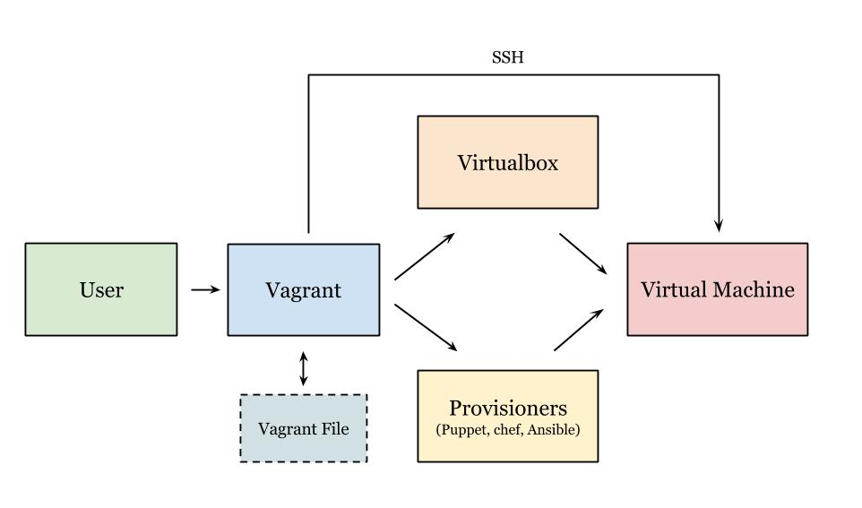
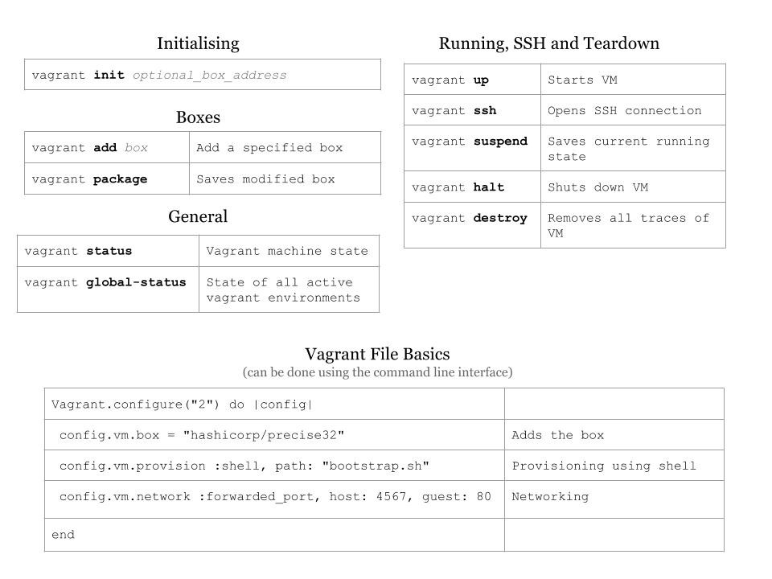
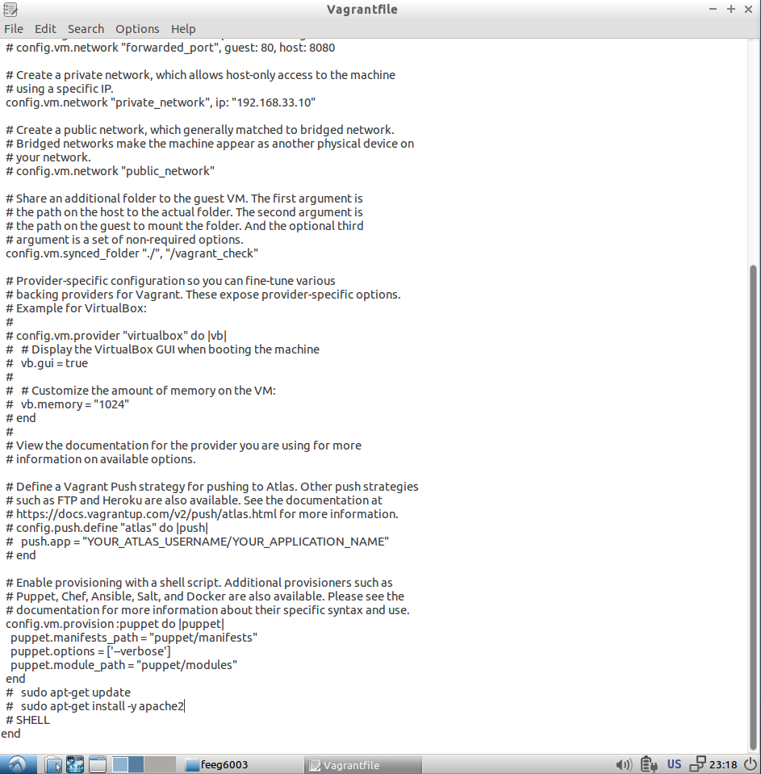
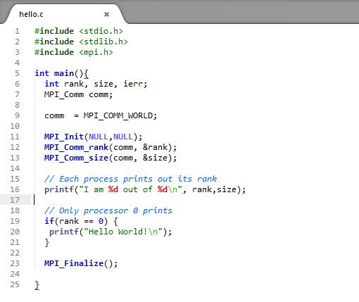
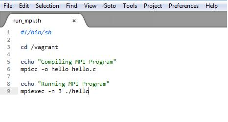
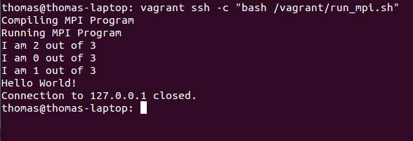

Files:
Presentation
Exercise Solution
Real World Demo

Introduction
Learning outcomes
- Understand different types of virtual machines
- Be able to run, provision and stop a vagrant virtual machine.
Virtual machine recap/overview
A virtual machine is a software implementation of a machine that executes programs like a physical machine. It essentially emulates a particular computer system. There are two main types of virtual machines, system virutal machines and process virtual machines.
System virtual machines
A system virtual machine allows the execution of a complete operating system. Important points include:
- Multiple virtual machines can co-exist on the same primary hard drive.
- Can provide emulated hardware environments, different from the host instruction set.
- Less efficient that actual machine.
Process virtual machines
Process virtual machines are designed to run a single program and therefore support a single process. They are generally used to provide portability for programming languages. Some important points inlcude:
- Can provide a platform independent programming environment
- A common example is the Java VIrtual Machine used for the Java Programming Language.
- Another example is the .NET framework which runs on Common Language Runtime.
Virtualisation on raw hardware (full virtualisation)
Full virtualisation of the hardware can be achieved using either a type 1 or type 2 hypervisor. A type 1 hypervisor runs directly on the hardware and a type 2 hypervisor runs on another operating system e.g. linux. Some common hypervisors include Xen, KVM (used by Amazon Web Services), VMware and Virtualbox.
Full optimisation is particularly in operating system development. It allows experimental code to be run at the same time as older more stable code, each in separate machines. Clusters of machines can aso be combined and access as a single virtual machine with shared memory.
Virtualisation at operating system level
Here the virtualisation takes place on the operating system (kernel) layer. It can be thought of a slicing a single server into multiple small partitions called virtual environments (VEs). This approaches has very little overhead due to the lack of multiple kernels (they must use the same kernel) unlike KVM or XEN hypervisors. This is in itself also a limitations as all the VEs are limited to same kernel. Generally operating system level virtualisation can run a much higher density of VEs than fully virtualised hardware.
Vagrant
What is it?
Vagrant is software for easily creating and configuring virtual development environments. Essentially it is a wrapper around other virtualisation software such as Virtualbox, VMware and around configuration management software such as Ansible, Puppet, Chef and salt. It also supports Docker, which is an operating system level virtualisation. Today we will be using basic vagrant commands as well as puppet for setting up our virtual environment.
Vagrant is configured using the Vagrantfile which contains information stored in plain text. A Vagrantfile can be used to configure a single machine or multiple machines. When vagrant commands are run, vagrant looks in it's current directory for a Vagrantfile. There must be only one Vagrantfile in a folder.
Why use vagrant? (instead of virtualbox or other virtualisation software)
- Allows the set up multiple virtual machines with ease
- It is highly portable
- Can use source control on setup files
- Can try a large number of various platforms quickly
Common workflow

What is puppet?
Puppet is a configuration management tool for unix-like and windows systems. Essentially, the desired system configuration is placed in a manifest (a file written in Puppet's declaritive language). This manifest is then converted into a system of resources and dependencies that are used to configure the system. It makes it easy to install and setup software in an automated way. A manifest can be included in the Vagrantfile and used to configure the virtual machine, an example of this is shown further down.
Getting started cheat sheet

Tutorial
1) Installing Vagrant
Linux:
sudo apt-get install vagrant
Windows/OSX:
Go to vagrant website and download the appropriate install file for Windows or OSX. You can then proceed to install it like a standard program.
2) Setting up our folder
Vagrant works on the basis of project folders. Each folder that you set-up vagrant in, starts a new project that is seperate from any other vagrant setups on the host machine.
3) Adding a box
vagrant box add <BOX_NAME>
We have two boxes that we want to set-up today as part of this exercise. To begin with, we are setting up a 32bit Ubuntu box called 'hashicorp/precise32'. This is pulled from the default box provider in vagrant.
4) Initialising Vagrant
vagrant init hashicorp/precise32
This stage unpacks our downloaded box into the virtualisation software it was setup with and prepares it for launch.
5) Provisioning with puppet
This is where vagrant gets very useful, using a provisioning system such as puppet we can automate tasks and commands to be run
at the provisioning stage (when the machine is initially setup). This allows for the easy setup of multiple machines for testing purposes.
There is a set folder structure that needs to be used with the puppet files in our project folder.
The first created folder needs to be called 'puppet'. In this folder, we make our default 'manifests' file, and create a default puppet file called 'default.pp'
ie.
/home/feeg6003/puppet/manifests/default.pp
An example puppet file can be seen here for the system-update module:
class system-update{
exec{'apt-get update':
command => 'apt-get update',
}
$sysPackages = ["build-essential"]
package{$sysPackages:
ensure=> "installed",
require=>Exec['qpt-get update'],
}
}
To setup modules for puppet we need to create a folder in the puppet root folder named 'modules'. The structure for our modules are that the name of a folder created in 'modules' is the name of the module.
Inside the module's folder we have a similar structure to our root puppet folder, with a manifests folder but this time the file in this folder is named 'init.pp'
To run the module, the default puppet file needs to be written. For example here we have a complete puppet file that will run the modules 'gcc' and 'system-update'
Exec { path => [ "/bin/", "/sbin/" , "/usr/bin/", "/usr/sbin/" ] }
include gcc
include system-update
6) Integrating puppet with vagrant and editing the Vagrantfile
There are many variables that can be changed in the Vagrantfile, however most of these settings are present by default and can be commented out to exclude.
The most important ones needed to start a virtual machine are:
config.vm.network "private_network", ip: "192.168.33.10"
This makes it possible to ssh into the virtual machine in vagrant and for it to support your connection to the terminal.
config.vm.synced_folder "./", "/vagrant_check"
This gives us the vagrant project folder and a folder in it named 'vagrant_check' that are synced.
Finally we need to activate our puppet scripts to run correctly. We do this by enabling provisioning with a shell script at the end of the file using the following code:
config.vm.provision :puppet do |puppet|
puppet.manifests_path = "puppet/manifests"
puppet.options = ['--verbose']
puppet.module_path = "puppet/modules"
end
All of these can be seen below:

7) Running the virtual machine
To run a virtual machine we need to tell vagrant to start the box, we do this with the command
8) Terminal control
To connect to the virtual machine and control it from the terminal we can ssh in using:
Exercise 1 - Setting up a virtual machine
For this first excercise, setup a virtual machine using the precise32 box employing all of the knowledge covered in this presentation so far. Write 2 puppet files to update the system and install gcc.
Tutorial 2 - Configuring multiple machines
To setup multiple virtual machines in vagrant we need to add an additional box. This is done in the same way as the tutorial 1, except this time add the box 'chef/centos-6.5-i386'.
Now we need to edit our Vagrantfile so that it will run both virtual machines and not just our original one.
Vagrant.configure("2") do |config|
config.vm.provision "shell", inline: "echo Hello"
config.vm.define "ubuntu" do |web|
ubuntu.vm.box = "hashicorp/precise32"
end
config.vm.define "centos" do |db|
centos.vm.box = "chef/centos-6.5-i386"
end
end
This replaces our current machine selection shown in the default Vagrantfile below
Every Vagrant development environment requires a box. You can search for
boxes at https://atlas.hashicorp.com/search.
config.vm.box = "hashicorp/precise32"
The first two lines of this will be commented out.
Now that we have multiple machines we can choose which ones we want to launch, if we use
as before all of the virtual machines will run at once, however we can also use
to just run one of the virtual machines.
This also effects the way we have to ssh into our machines, now we have to use
to tell vagrant which one we want to connect to.
Real world demo - Setting up an openmpi environment to test code
A useful work-case for vagrant is that is allows you to remotely test your application on a personalised and specificly configured environment. This allows you to mimic an evironment you might want to deploy your finalised application on (a supercomputer for instance).
Here, we use a shell script provisioner to set-up our environment to run OpenMPI code.
(Note: You could use puppet, but it is a lot harder as we are compiling our code from source since there is no up to date package for OpenMPI.)
Setting up the vagrant machine
Before we deploy our code we need to set up a virtual machine with the required OpenMPI packages to run it. As before, we initialise a new vagrant machine using vagrant init
This creates a Vagrantfile where we can specify the provisioning instructions. Before we do this, we create the provisioning shell script.
Creating the shell script
Update the system and install build essentials and make, as the box we are using does not come pre-installed with these
sudo apt-get update -y
sudo apt-get install build-essential make -y
Next download the source code for builing OpenMPI using wget with the --no-check-certificate to stop it prompting you to confirm the connection.
wget https://www.open-mpi.org/software/ompi/v1.8/downloads/openmpi-1.8.3.tar.gz --no-check-certificate
tar -xvf openmpi-1.8.3.tar.gz
Configure and install OpenMPI in a new directory
mkdir /home/vagrant/openmpi
cd openmpi-1.8.3
./configure --prefix="/home/vagrant/openmpi"
make
echo "sudo making"
sudo make install
Export the OpenMPI package path to the bash settings file
echo export PATH="$PATH:/home/vagrant/openmpi/bin" >> /home/vagrant/.bashrc
echo export LD_LIBRARY_PATH="$LD_LIBRARY_PATH:/home/vagrant/openmpi/lib/" >> /home/vagrant/.bashrc
This makes Open MPI available when running through an interactive shell. To use it through ssh, add
echo export PATH="$PATH:/home/vagrant/openmpi/bin" >> /home/vagrant/.profile
echo export LD_LIBRARY_PATH="$LD_LIBRARY_PATH:/home/vagrant/openmpi/lib/" >> /home/vagrant/.profile
Vagrantfile file settings
We can now modify the Vagrantfile to run our script when provisioning the vagrant machine. To do this, add the following lines to your vagrant file
config.vm.provision :shell, :path => "provision.sh"
We are now ready to vagrant up.
(Tip: You might want to take a tea break at this point as this takes between 5-15 minutes to complete)
Saving into the /vagrant shared area
We can now save a piece of code that we wish to test in the vagrant shared folder and use vagrant ssh to compile and run it on the vagrant machine. This allows you to develop and edit your program in your host environment and deploy it for testing in your specially configured vagrant box. A simple OpenMPI test code is shown below

Here we use a simple shell script shown below to deploy the hello.c program

Executing the following command runs the script to compile and run hello.c
vagrant ssh -c "bash /vagrant/run_mpi.sh"

Links
Vagrant Documentation
Puppet Documentation